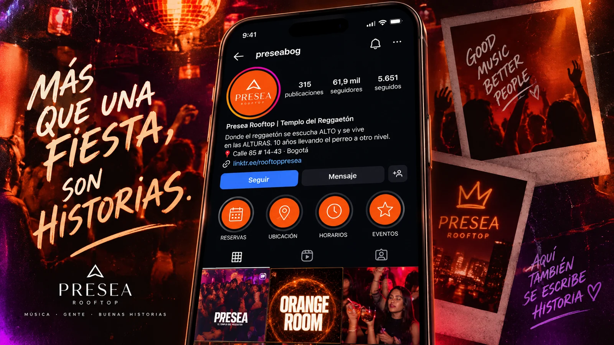
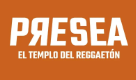
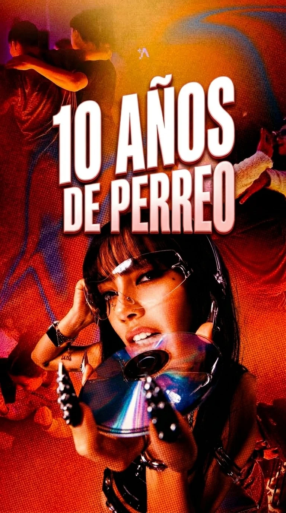
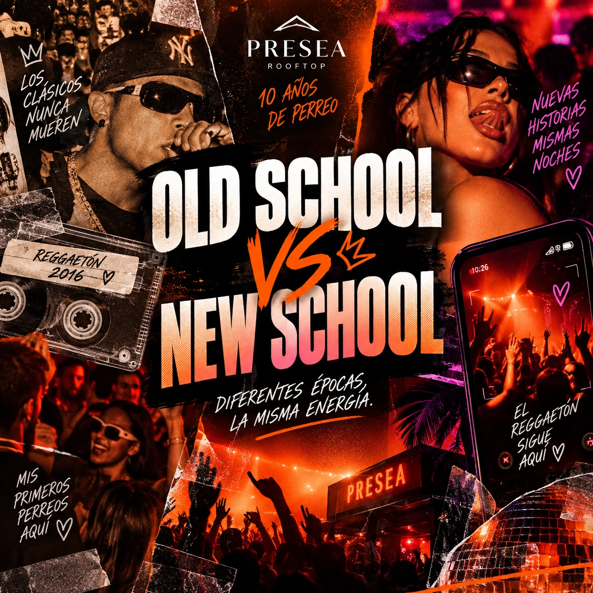
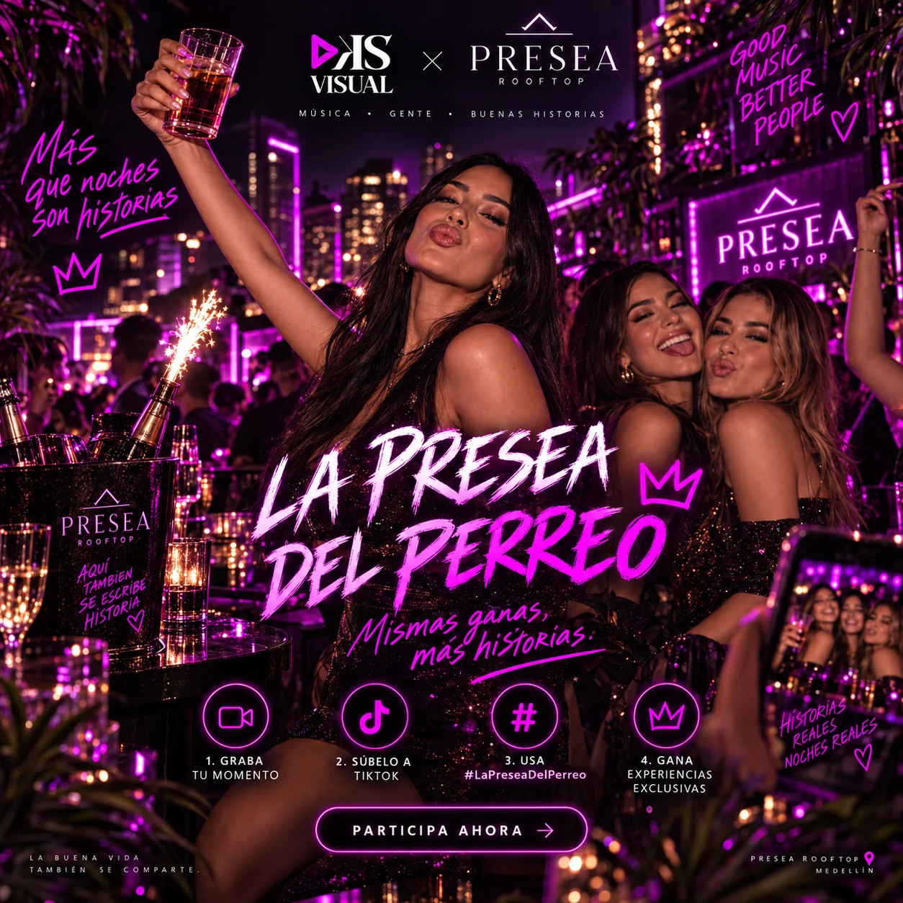
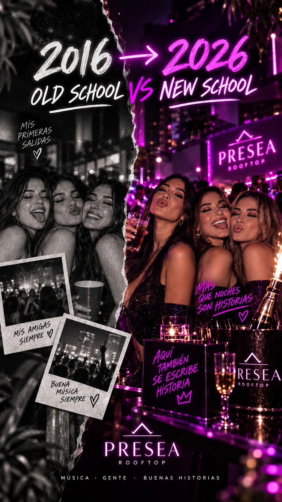
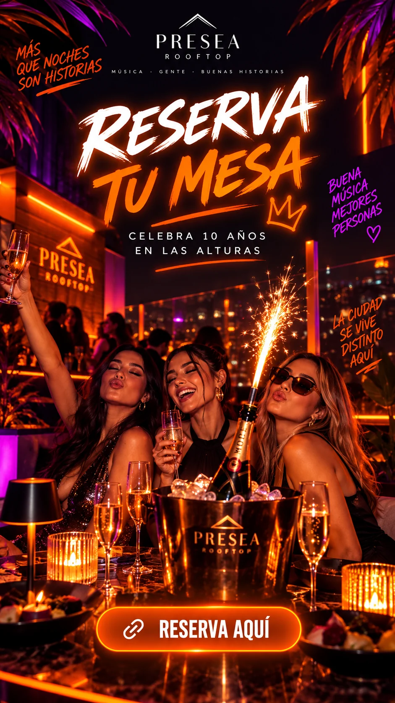

10 años de perreoBrand post
Manifiesto visual para abrir campaña. Sirve para fijar la estética y presentar el aniversario como un hito cultural.
Instagram se plantea como una mezcla de brand content, comunidad y conversión. Aquí cada pieza tiene una función: recordar, activar conversación o empujar reserva.


10 años de buena música, mejores historias. Reggaetón old & new · Rooftop · Medellín.

Manifiesto visual para abrir campaña. Sirve para fijar la estética y presentar el aniversario como un hito cultural.

Pieza pensada para comentarios, guardados y shares. Abre la conversación entre generaciones y hace que la audiencia tome postura.

Post de activación para incentivar UGC: grabar momento, subirlo y ganar experiencias o beneficios.
Para que el perfil no sea estático, los posts conviven con piezas verticales que mantienen el movimiento.

Transición nostálgica que conecta archivo y presente. Ideal para alcance y retención.

Pieza de conversión con CTA claro a WhatsApp o formulario de reserva.